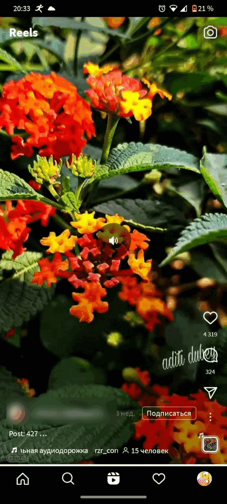
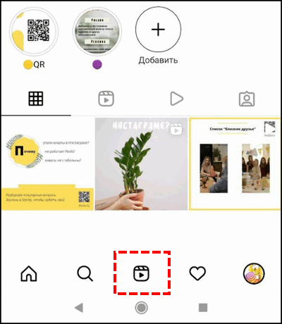
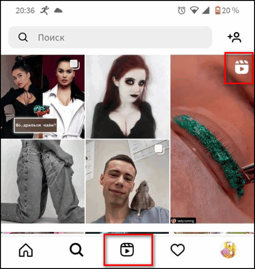

Рилс в Инстаграме: что это такое и как переводится

Видео Рилс в Инстаграме* – это короткие видеоролики, продолжительностью не более 15 секунд. Автор может добавить аудиодорожку, сделать ремикс или использовать маски.
Рилс в Инстаграме*: что это
Функция Reels в Инстаграме* появилась с одним из обновлений и направлена на создание коротких клипов. Особенность в том, что она расположена в отдельном разделе и включает дополнительное меню. С каждым обновлением в Рилс появляются новые функции: одна из последних – Ремиксы. С помощью нововведения авторы контента могут снимать клипы совместно с видео других пользователей, объединяя запись музыкальной дорожкой.
Другие опции, которые есть в Рилс:
- комментарии. Зрители могут оставить короткие отзывы на видеоклип;
- лайки. Поставить отметку: «Мне нравится» на запись;
- сохранить в Избранное. Чтобы вернуться к записи в дальнейшем, не используя функции «Мне нравится»;
- добавление музыкальной дорожки из каталога;
- запись озвучки на записанное видео;
- маски, которые также применяются в Историях;
- видеоответы на комментарии;
- отдельные настройки конфиденциальности.

На Рилс не распространяется продвижение и статистика, но опции могут быть введены в последующих обновлениях. Reels доступен по значку «Публикации» в нижней части меню. В версии, где доступен «видеоархив», была заменена стандартная кнопка: «Добавить пост» на меню перехода в Рилс. Дополнительно, записи появляются в Рекомендациях, отмеченные сверху значком «киноленты». В отличие от остальных видеоклипов, отличается вертикальным форматом: клип растягивается на весь экран.
Как переводится
Рилс в Инстаграме* – простыми словами и в переводе это «барабан». Такое название выбрано неслучайно: видео идут по кольцевому списку, со свайпом сверху-вниз. Получается бесконечный список видеоклипов, которые подобраны в соответствии с подписками и интересами владельца страницы.

Есть и другие переводы Reels на русский:- катушка;
- шатание;
- бобина.
Все они относятся к стилю исполнения раздела: круговая Лента публикаций.
История создания
Reels в Инстаграме* появился в 2021 году и причиной нововведения стал успех другого мобильного приложения Tik Tok (Musicaly). Это не первый случай, когда социальная сеть заимствует идею у конкурентов, перерабатывает и вносит новый функционал. То же произошло с идеей масок в Snapchat, которые были добавлены в Stories.
На момент 2022 года не все пользователи получили актуальное обновление: проблема в региональном распространении версий. Приложение обновляется выборочно и с отсутствием новой функции сталкиваются не только жители СНГ. Помимо регионального распространения, проблема может быть в устаревшей версии операционной системы, отключенном автоматическом обновлении на смартфоне.